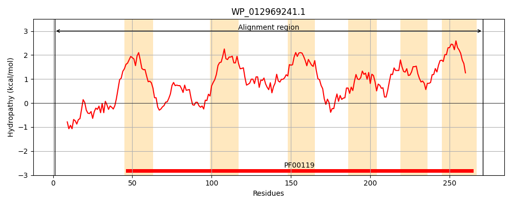
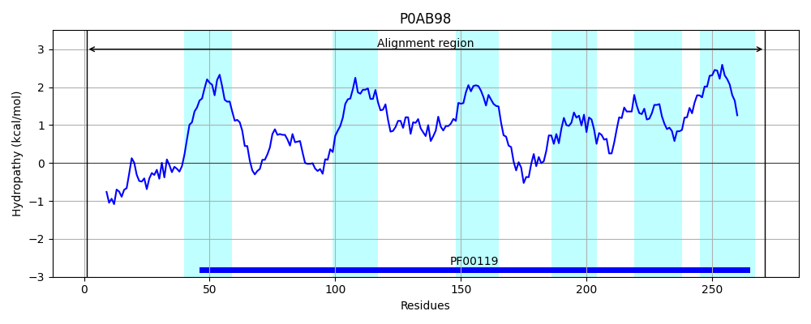

Hit Accession: P0AB98
Hit TCID: 3.A.2.1.1
Hit Description: gnl|BL_ORD_ID|8694 gnl|TC-DB|P0AB98|3.A.2.1.1 ATP synthase a chain - Escherichia coli.
Mach Len: 271
e:0.000000
Query TMS Count : 6
Hit TMS Count: 6
TMS-Overlap Score: 5.600000
Predicted Substrates:CHEBI:5584;hydron
BLAST Alignment:
Score: 1324 , Bit scores: 514 bits, E-value: 0.0e+00, Alignment length: 271, Percentage identity: 92
Query: 1 MASENMTPQEYISHHLNNLQIDLRTFSLVDPHNPPATFWTLNIDSMFFSVVLGLLFLAMFRSVAKKATSGVPGKFQTFIEMIIGFVHGSVKDMYHGKSKVIAPLALTVFVWVFLMNLMDLLPIDLIPYIGEHIFGLPALRVVPSADVNITLSMALGVFILIIFYSIKMKGVGGFVKELTMQPFNHWAFIPVNLILEGVSLLSKPVSLGLRLFGNMYAGELIFILIAGLLPWWSQWVLNVPWAIFHILIITLQAFIFMVLTIVYLSMASEEH 271
MASENMTPQ+YI HHLNNLQ+DLRTFSLVDP NPPATFWT+NIDSMFFSVVLGLLFL +FRSVAKKATSGVPGKFQT IE++IGFV+GSVKDMYHGKSK+IAPLALT+FVWVFLMNLMDLLPIDL+PYI EH+ GLPALRVVPSADVN+TLSMALGVFILI+FYSIKMKG+GGF KELT+QPFNHWAFIPVNLILEGVSLLSKPVSLGLRLFGNMYAGELIFILIAGLLPWWSQW+LNVPWAIFHILIITLQAFIFMVLTIVYLSMASEEH
Sbjct: 1 MASENMTPQDYIGHHLNNLQLDLRTFSLVDPQNPPATFWTINIDSMFFSVVLGLLFLVLFRSVAKKATSGVPGKFQTAIELVIGFVNGSVKDMYHGKSKLIAPLALTIFVWVFLMNLMDLLPIDLLPYIAEHVLGLPALRVVPSADVNVTLSMALGVFILILFYSIKMKGIGGFTKELTLQPFNHWAFIPVNLILEGVSLLSKPVSLGLRLFGNMYAGELIFILIAGLLPWWSQWILNVPWAIFHILIITLQAFIFMVLTIVYLSMASEEH 271 | Protein Hydropathy Plots: |
|---|
|  |  |
Pairwise Alignment-Hydropathy Plot:
|
|---|
 |